みなし加入・全員加入扱い
入学・転入時に、入会申込書や同意確認を経ないまま「保護者はPTA会員」として扱う類型です。任意団体であるPTAへの加入を、学校生活の手続と一体に見せることで、加入しない選択肢が事実上消えます。
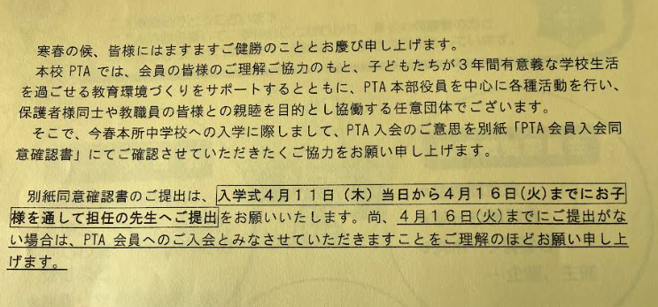
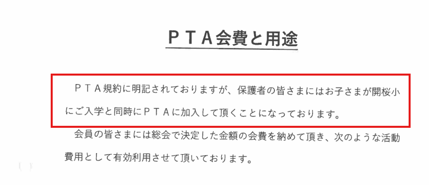
どこが問題か
- 入会申込書がない、または「提出しない場合は加入しない」と読める選択肢がない。
- 不提出を入会意思とみなし、加入しない意思表示をしなければ加入扱いにしている。
- PTA会費の口座振替依頼書が、学校徴収金の書類と同じ束に入っている。
- 「全家庭」「原則加入」「ご協力ください」という文言で、任意加入であることが十分に伝わらない。
入会申込や明確な承諾なしに会員として扱う運用は、PTA会員契約の成立を前提にできず、明確に問題があります。
関係する法令・制度
契約は申込みと承諾によって成立します。入会申込なしに、学校側またはPTA側が一方的に会員扱いをすることは、契約成立の根拠を欠きます。加入しない自由を含む結社の自由との関係でも問題となります。
学校徴収金とPTA会費の抱き合わせ徴収
給食費、教材費、修学旅行積立金などの学校徴収金と同じ通知・同じ口座振替でPTA会費を集める類型です。学校費用とPTA会費の境界が見えにくくなり、非会員からも徴収される危険があります。
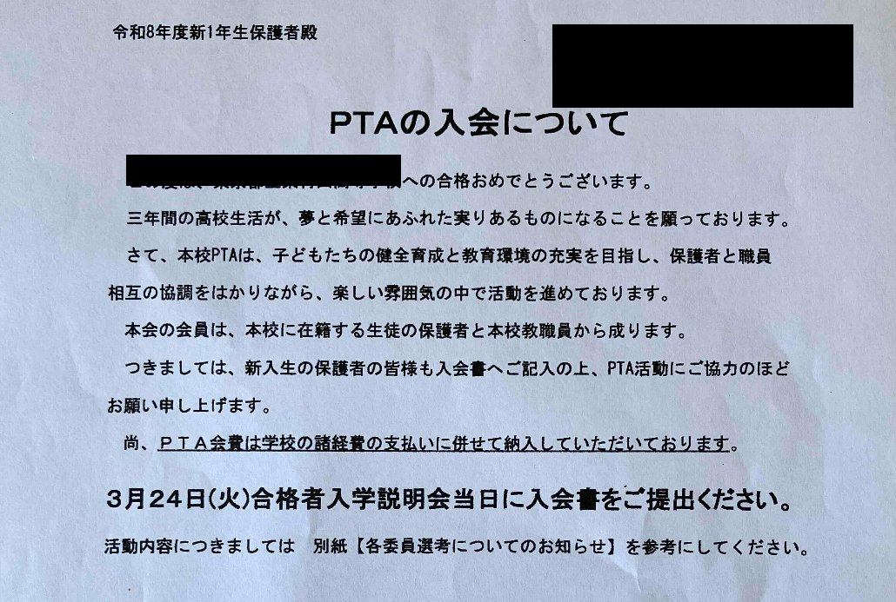
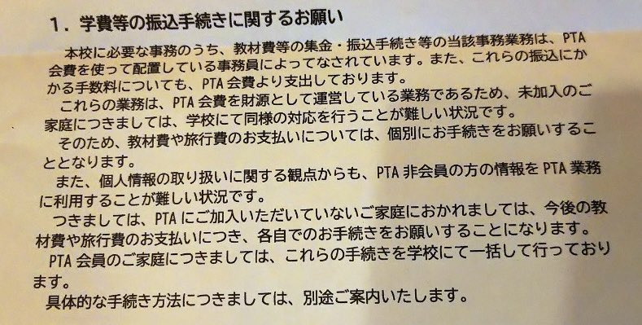
どこが問題か
- PTA会費が「学校納付金」の内訳に入り、学校の費用であるかのように見える。
- 加入者・非加入者の区別がないまま一律引落しされる。
- 返金や停止の窓口が学校事務室になり、PTAの独立性が曖昧になる。
- PTA会費を財源とする事務と学校徴収金事務が一体化し、非会員対応に差が出る可能性がある。
PTA非会員からPTA会費を徴収する根拠はありません。非会員からの会費徴収は明確に問題であり、返還の対象となり得ます。
関係する法令・制度
学校による代行徴収そのものは、自治体の規程、委任関係、会計処理、加入者確認の仕組みによって適否の確認が必要です。ただし、会員契約がない保護者から会費を徴収することは、PTA側にも学校側にも根拠説明が必要です。
学校保有個人情報のPTA提供
学校が保有する児童・保護者の氏名、住所、電話番号、きょうだい情報、クラス情報などを、本人同意なくPTAへ渡す類型です。公立学校の場合、個人情報保護法69条を中心に確認する必要があります。
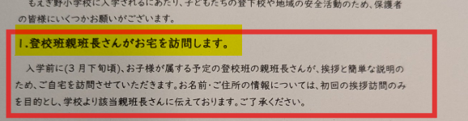
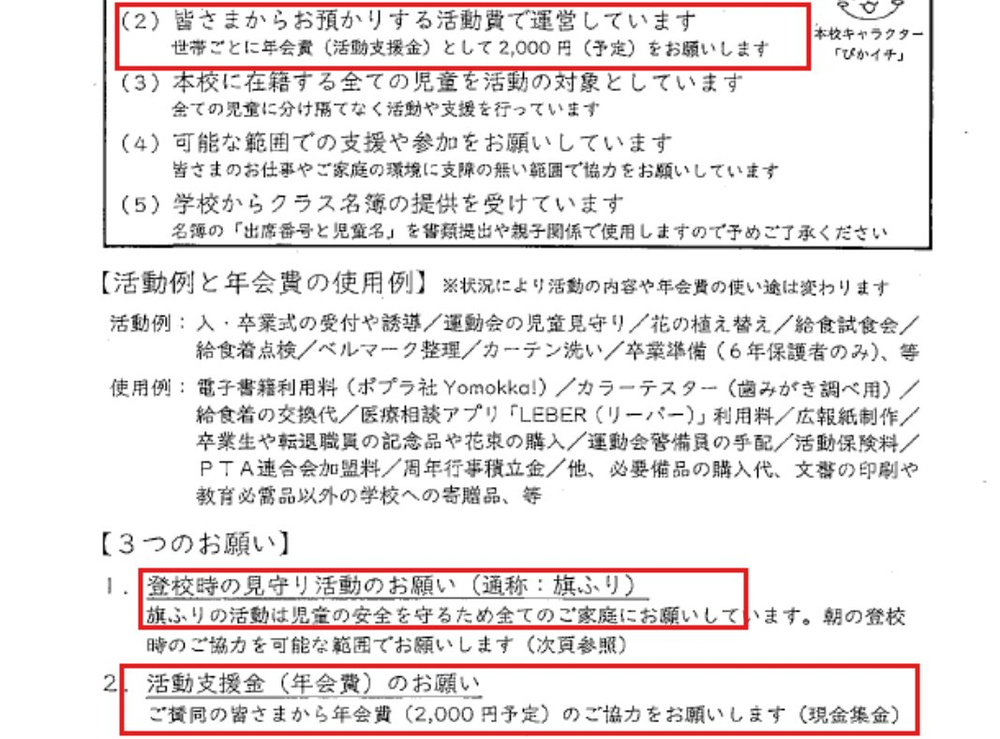
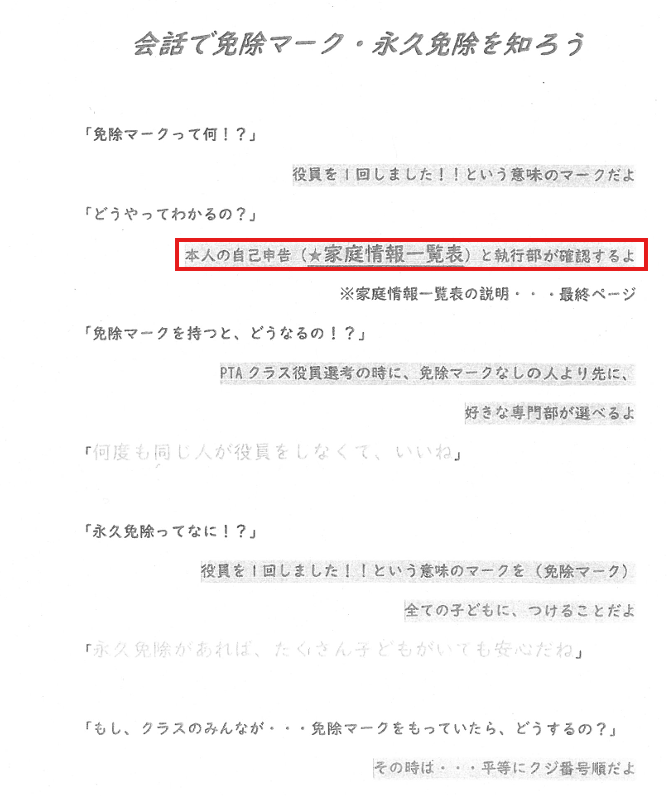
どこが問題か
- 学校へ提出した情報が、PTA活動のために使われることが事前に説明されていない。
- 本人同意の書面や、同意しない選択肢がない。
- PTA役員、地区委員、学年委員など複数人に名簿が共有され、管理責任が曖昧になる。
- 住所、加入・非加入、家庭事情、役員履歴などがPTA活動のために広く扱われる。
本人同意なき学校保有個人情報のPTA提供は、重大な問題です。公立学校では、個人情報保護法69条の利用・提供制限に照らして根拠を確認する必要があります。
関係する法令・制度
個人情報保護法69条1項は、行政機関の長等が、法令に基づく場合を除き、利用目的以外の目的で保有個人情報を利用・提供してはならないと定めています。PTAは学校とは別の任意団体であり、本人同意や法令根拠なしに一律提供する運用は問題が明確です。
69条2項各号の例外に該当すると説明する場合でも、本人または第三者の権利利益を不当に侵害するおそれがないか、提供範囲が必要最小限かを確認する必要があります。
確認すべき資料
- 個人情報収集時の利用目的説明
- PTA提供に関する同意書
- 名簿提供記録・管理台帳
関係する論点ページ
改善の方向・確認すべきこと
- PTAへの提供根拠を何条何項で説明するか。
- 本人同意をいつ、どの書式で取得しているか。
- 提供停止・削除の手続はあるか。
学校連絡ツールによるPTA配信
学校が管理するメール配信、アプリ、保護者連絡ツールを使って、PTAからの加入案内、役員募集、集金案内、行事協力依頼を配信する類型です。学校連絡とPTA連絡の境界が曖昧になります。
assets/compliance/case04-school-contact-tool.jpg
どこが問題か
- 送信者が学校なのかPTAなのか、保護者に判別しにくい。
- 学校連絡網に登録した連絡先が、PTA配信にも使われる。
- PTA加入・役員協力への心理的圧力が、学校からの通知として届く。
関係する法令・制度
学校連絡ツールの利用目的が「学校からの教育上必要な連絡」に限られている場合、PTA配信への利用は目的外利用・提供の問題となり得ます。ツールの契約主体、管理者、配信権限、利用規約、教育委員会の運用基準を確認する必要があります。
PTAからの周知を学校が媒介すること自体が直ちにすべて不適切とは限りませんが、加入勧誘、会費、役員割当、非会員への連絡などは、任意団体の活動と学校の公的連絡を切り分けて扱う必要があります。
確認すべき資料
- 連絡ツール利用規約
- 保護者への利用目的説明
- PTA配信の承認フロー
関係する論点ページ
改善の方向・確認すべきこと
- PTA配信は誰の権限で送信しているか。
- 保護者はPTA配信を拒否できるか。
- 配信履歴・承認記録を保存しているか。
役員・委員選出の強制化、免除審査
PTA活動は、本来、加入した会員が任意に参加する活動です。しかし現場では、「在学中に1人1回」「家族1役」「欠席者もくじ引き対象」「提出しない場合は了承扱い」など、役員・委員就任を事実上強制する運用が見られます。さらに、免除を受けるために、妊娠、障害、疾病、ひとり親、乳児、不登校、転居予定などの家庭事情を申告させる例もあります。
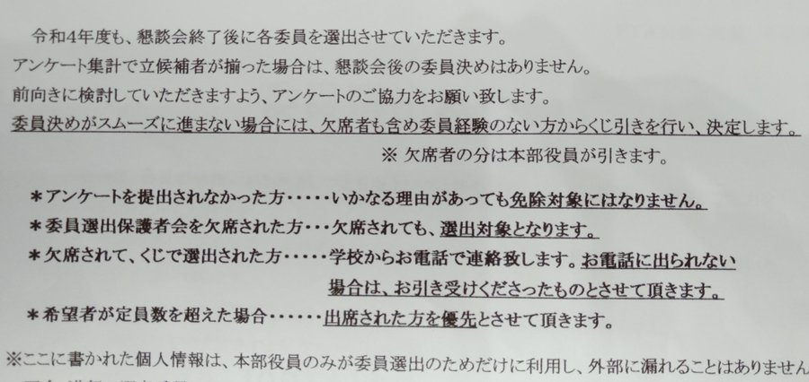
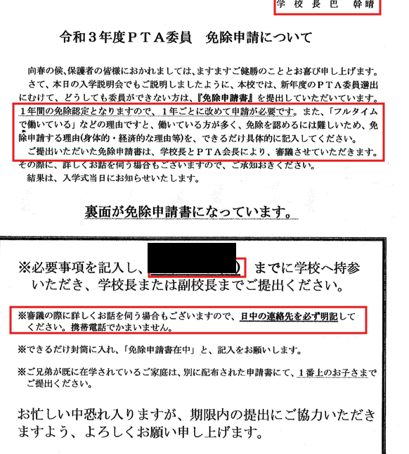
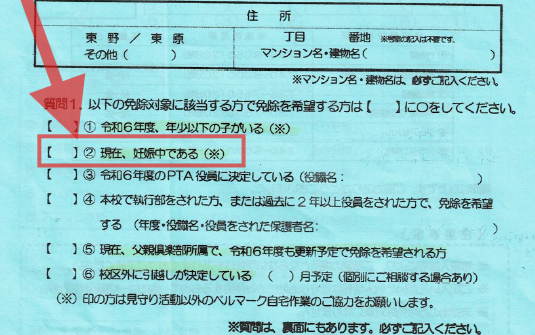
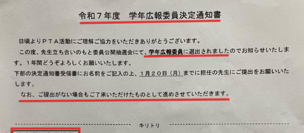
どこが問題か
- PTA活動が任意ではなく義務のように扱われている。
- 欠席者や未提出者も役員選出対象になる。
- 電話に出ない、書類を出さない場合に承諾扱いされる。
- 免除申請のために妊娠、障害、疾病、不登校、ひとり親などのセンシティブな情報を提出させている。
- PTA執行部が免除可否を審査し、役員経験や免除履歴を家庭単位で管理している。
- 学校長、副校長、担任など学校職員が提出先・連絡先として関与している。
関係する法令・制度
役員・委員就任も、本人の明示的な同意を前提に整理すべきです。未回答や欠席を承諾とみなす運用は、PTAの任意性や民法上の意思表示との関係で問題となります。
免除制は「できない理由」を証明させる制度になりやすく、妊娠、障害、疾病、家庭事情、子どもの状況など、任意団体が取得すべきでない情報まで集める危険があります。学校職員を提出先にする場合は、学校とPTAの分離、個人情報保護、職務専念義務との関係も確認が必要です。
改善の方向
くじ引きや未回答承諾扱いをやめ、参加可能な人が明示的に引き受ける制度へ改める必要があります。免除制ではなく「参加できる範囲で参加する」制度にし、妊娠、障害、疾病、家庭事情などを提出させない運用が望まれます。
確認すべき資料
- 役員選出通知・委員選出カード
- くじ引き実施要領・免除申請書
- 家庭情報一覧表・役員経験管理表
関係する論点ページ
改善の方向・確認すべきこと
- 学校が役員選出書類の配布・回収・審査に関与していないか。
- 未回答や欠席を承諾扱いしていないか。
- 家庭事情や要配慮情報を提出させていないか。
教職員・学校経由のPTA事務
PTA書類を学校の提出物と一緒に回収したり、教職員が勤務時間中にPTA会費管理、配布物作成、役員連絡、会議準備を行ったりする類型です。服務、校務分掌、職務専念義務、職専免、学校とPTAの分離の観点で整理します。
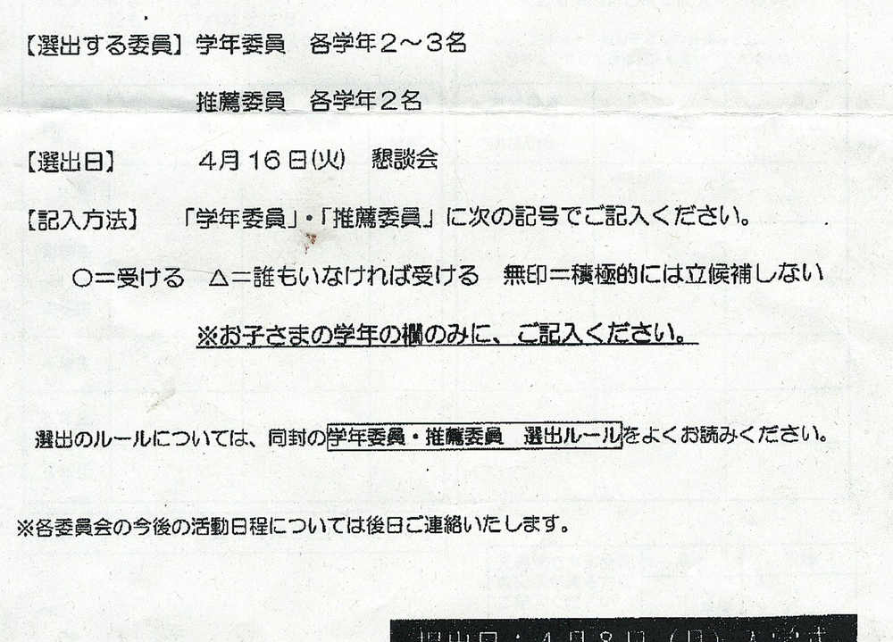
どこが問題か
- PTA書類が学校の提出物と同じ封筒・同じ提出先で扱われ、任意団体の手続と学校手続が混同される。
- PTA事務が校務分掌や担任業務のように扱われる。
- 職専免の申請・承認記録がない、または包括的で活動内容が特定されていない。
- PTAの内部事務と、学校としての連絡調整業務が混在している。
関係する法令・制度
地方公務員法35条は、職員が勤務時間中、職務に専念する義務を定めています。PTAは学校とは別の社会教育関係団体であるため、教職員がPTAの内部事務を行う場合、それが公務として位置づけられるのか、職専免が必要なのか、根拠確認が必要です。
教員については給特法により時間外勤務や休日勤務の扱いに特別な制度があるため、PTA行事への関与を一般的な時間外労働の枠組みだけで即断するのは適切ではありません。ただし、任意団体の事務を職務として無限定に担わせる運用は、不適切運用となり得ます。
学校施設・印刷機・児童経由配布の利用
PTA室、会議室、職員室の印刷機、学校の用紙、児童経由の配布ルートをPTA活動に使う類型です。学校教育上の支障、使用許可、費用負担、公私の境界を確認する必要があります。
どこが問題か
- 施設利用や印刷機利用の許可・費用負担が記録されていない。
- 学校配布物とPTA配布物が同じ経路で配られ、発信主体が曖昧になる。
- PTAだけが継続的・優先的に学校設備を利用している。
関係する法令・制度
学校教育法137条は、学校教育上支障のない限り、学校施設を社会教育その他公共のために利用させることができるとしています。したがって利用が常に否定されるわけではありませんが、許可手続、利用範囲、費用負担、公平性の確認が必要です。
児童経由配布は、学校の教育活動とPTA活動を一体に見せる効果があります。入会案内、会費請求、非会員への圧力につながる文書を学校ルートで配布する場合、不適切運用となり得ます。
確認すべき資料
- 施設使用許可書
- 印刷機・用紙の費用負担記録
- 配布物承認基準・配布依頼書
関係する論点ページ
改善の方向・確認すべきこと
- PTAの施設利用は誰が許可しているか。
- 印刷費・紙代・光熱費の負担はどうしているか。
- 児童経由配布の基準は文書化されているか。
非会員への協力金・非会員特定
PTAに加入しない家庭へ「協力金」「実費負担」「記念品代」などを求めたり、非会員家庭を役員・委員・担任が把握できる形で共有したりする類型です。任意性と個人情報管理の両面で注意が必要です。
どこが問題か
- 「協力金」と言いながら、支払わない選択肢や任意性が明示されていない。
- 非会員家庭を特定できる一覧が、必要範囲を超えて共有される。
- 担任や学校を窓口にして、PTAへの支払いを求める。
関係する法令・制度
非会員からPTA会費を徴収することは明確に問題です。一方、行事参加や物品購入などの実費負担は、任意性、対象、金額根拠、会員・非会員の公平性を具体的に確認する必要があります。
非会員であること自体も個人に関する情報です。学校が把握した加入・非加入情報をPTAへ提供する場合、個人情報保護法69条との関係で根拠確認が必要です。PTA内部でも、必要最小限の共有にとどめるべきです。
確認すべき資料
- 協力金依頼文・実費請求書
- 加入・非加入管理台帳
- 個人情報取扱規程
関係する論点ページ
改善の方向・確認すべきこと
- 非会員情報を学校がPTAへ提供していないか。
- 協力金が任意であることを明記しているか。
- 未払い家庭の情報共有範囲を限定しているか。
非加入・退会による不利益、差別的取扱い
保護者がPTAに加入していない、または退会することを理由に、児童が行事、記念品、登校班、見守り、学校施設を使う活動から除外される、または不利益が列挙され退会をためらわせる類型です。保護者の団体加入と子どもの学校生活を結びつける点が大きな問題です。
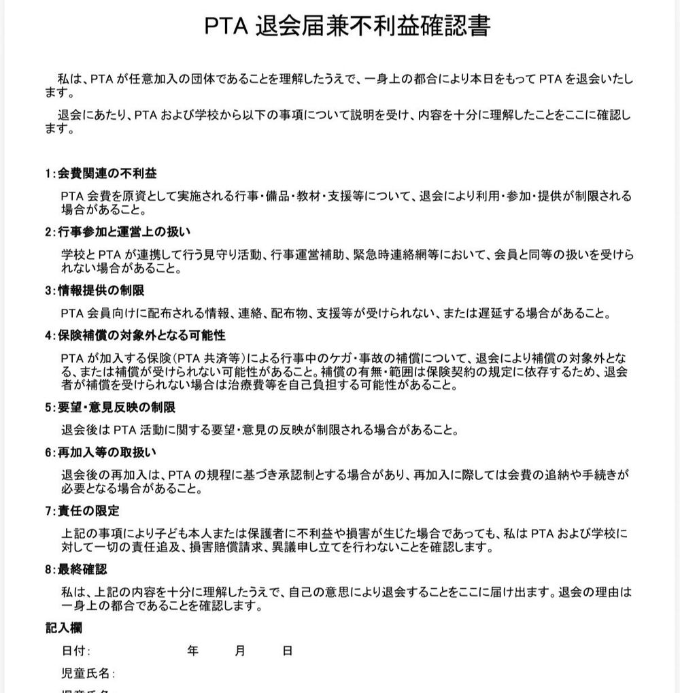
どこが問題か
- 「PTA会員家庭の児童に限る」という条件で、児童の参加や配布物を制限する。
- 学校施設や学校行事と一体化した活動で、非加入児童だけ扱いを変える。
- 退会に伴う不利益を列挙することで、退会の自由に萎縮効果を与える。
- 子どもへの不利益を通じて、保護者に加入を迫る構造になる。
保護者のPTA加入状況を理由に、児童へ不利益や差別的取扱いを及ぼす運用は極めて不適切です。学校生活に関わる場面では、強い是正が必要です。
関係する法令・制度
PTAが純粋に会員向けの互助的給付を行う場面と、学校・全校児童・学校施設を使う活動は分けて整理する必要があります。学校教育活動と一体化している場合、加入状況で児童を区別することは問題となります。
登校班、見守り、学校施設での活動、卒業・入学関連行事などは、学校・教育委員会の関与範囲や安全配慮との関係も確認が必要です。
実例を、次の確認行動につなげる
このページは、問題を煽るためではなく、現場の書類を根拠にして適正化へ進むための入口です。立場に応じたガイド、教育委員会の公式回答、全国資料館とあわせて確認してください。